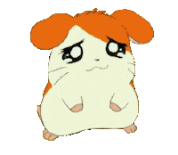

|
|
Terrortorrent!

Selected poems
Tulips
by Sylvia Plath
The tulips are too excitable, it is winter here. Look how white everything is, how quiet, how snowed-in. I am learning peacefulness, lying by myself quietly As the light lies on these white walls, this bed, these hands. I am nobody; I have nothing to do with explosions. I have given my name and my day-clothes up to the nurses And my history to the anesthetist and my body to surgeons.
They have propped my head between the pillow and the sheet-cuff Like an eye between two white lids that will not shut. Stupid pupil, it has to take everything in. The nurses pass and pass, they are no trouble, They pass the way gulls pass inland in their white caps, Doing things with their hands, one just the same as another, So it is impossible to tell how many there are.
My body is a pebble to them, they tend it as water Tends to the pebbles it must run over, smoothing them gently. They bring me numbness in their bright needles, they bring me sleep. Now I have lost myself I am sick of baggage—— My patent leather overnight case like a black pillbox, My husband and child smiling out of the family photo; Their smiles catch onto my skin, little smiling hooks.
I have let things slip, a thirty-year-old cargo boat stubbornly hanging on to my name and address. They have swabbed me clear of my loving associations. Scared and bare on the green plastic-pillowed trolley I watched my teaset, my bureaus of linen, my books Sink out of sight, and the water went over my head. I am a nun now, I have never been so pure.
I didn’t want any flowers, I only wanted To lie with my hands turned up and be utterly empty. How free it is, you have no idea how free—— The peacefulness is so big it dazes you, And it asks nothing, a name tag, a few trinkets. It is what the dead close on, finally; I imagine them Shutting their mouths on it, like a Communion tablet.
The tulips are too red in the first place, they hurt me. Even through the gift paper I could hear them breathe Lightly, through their white swaddlings, like an awful baby. Their redness talks to my wound, it corresponds. They are subtle : they seem to float, though they weigh me down, Upsetting me with their sudden tongues and their color, A dozen red lead sinkers round my neck.
Nobody watched me before, now I am watched. The tulips turn to me, and the window behind me Where once a day the light slowly widens and slowly thins, And I see myself, flat, ridiculous, a cut-paper shadow Between the eye of the sun and the eyes of the tulips, And I have no face, I have wanted to efface myself. The vivid tulips eat my oxygen.
Before they came the air was calm enough, Coming and going, breath by breath, without any fuss. Then the tulips filled it up like a loud noise. Now the air snags and eddies round them the way a river Snags and eddies round a sunken rust-red engine. They concentrate my attention, that was happy Playing and resting without committing itself.
The walls, also, seem to be warming themselves. The tulips should be behind bars like dangerous animals; They are opening like the mouth of some great African cat, And I am aware of my heart: it opens and closes Its bowl of red blooms out of sheer love of me. The water I taste is warm and salt, like the sea, And comes from a country far away as health.
A Birthday Present
by Sylvia Plath
What is this, behind this veil, is it ugly, is it beautiful? It is shimmering, has it breasts, has it edges?
I am sure it is unique, I am sure it is what I want. When I am quiet at my cooking I feel it looking, I feel it thinking
'Is this the one I am too appear for, Is this the elect one, the one with black eye-pits and a scar?
Measuring the flour, cutting off the surplus, Adhering to rules, to rules, to rules.
Is this the one for the annunciation? My god, what a laugh!'
But it shimmers, it does not stop, and I think it wants me. I would not mind if it were bones, or a pearl button.
I do not want much of a present, anyway, this year. After all I am alive only by accident.
I would have killed myself gladly that time any possible way. Now there are these veils, shimmering like curtains,
The diaphanous satins of a January window White as babies' bedding and glittering with dead breath. O ivory!
It must be a tusk there, a ghost column.
Can you not see I do not mind what it is.
Can you not give it to me?
Do not be ashamed—I do not mind if it is small.
Do not be mean, I am ready for enormity.
Let us sit down to it, one on either side, admiring the gleam,
The glaze, the mirrory variety of it.
Let us eat our last supper at it, like a hospital plate.
I know why you will not give it to me,
You are terrified
The world will go up in a shriek, and your head with it,
Bossed, brazen, an antique shield,
A marvel to your great-grandchildren.
Do not be afraid, it is not so.
I will only take it and go aside quietly.
You will not even hear me opening it, no paper crackle,
No falling ribbons, no scream at the end.
I do not think you credit me with this discretion.
If you only knew how the veils were killing my days.
To you they are only transparencies, clear air.
But my god, the clouds are like cotton.
Armies of them. They are carbon monoxide.
Sweetly, sweetly I breathe in,
Filling my veins with invisibles, with the million
Probable motes that tick the years off my life.
You are silver-suited for the occasion. O adding machine——-
Is it impossible for you to let something go and have it go whole?
Must you stamp each piece purple,
Must you kill what you can?
There is one thing I want today, and only you can give it to me.
It stands at my window, big as the sky.
It breathes from my sheets, the cold dead center
Where split lives congeal and stiffen to history.
Let it not come by the mail, finger by finger.
Let it not come by word of mouth, I should be sixty
By the time the whole of it was delivered, and to numb to use it.
Only let down the veil, the veil, the veil.
If it were death
I would admire the deep gravity of it, its timeless eyes.
I would know you were serious.
There would be a nobility then, there would be a birthday.
And the knife not carve, but enter
Pure and clean as the cry of a baby,
And the universe slide from my side.